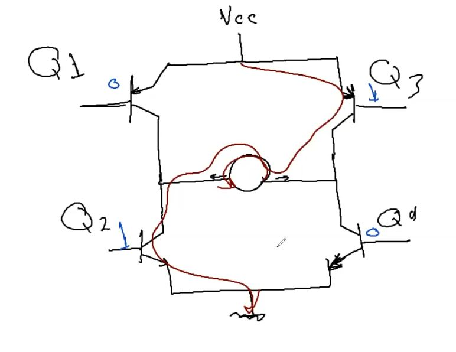

We Did cover the Fast PWM method in Timers-part2-, where we said that we do have two modes the Normal and inverted so let us put this in the form of equations.
So here is the difference in the wave where the counter TCNT start
counting up till reaching the Top and then starts to count back down,
such that the cycle will be doubled. now imagine puting a value in the
OCR of 100 How many times will the OCR cut the Wave??
Yes you are right, it will intesect two times one while the counter is
going up and once while going down.
So the Lets assume that the wave is starting with a high pulse and when
reaching OCR value will turn low then will start counting down and will
intersect the OCR value again so will turn up high again and continue
till the TCNT reaches a zero. Yet one draw-back here is that the
frequency is halfed cuz the time taken to make one wave is doubled.
so if you are wondering why we need this mode, ofc it's to simply deal
with the problem of the Zero and full load, let us demonstrate how
through the equations.
fGenerated Wave is halfed because the Top is doubled
So lets generalize the concept, where if we wanna achieve the highest Frequency(speed for example) we need to use the Fast PWM while if we need a high Accuracy from the wave we will use Phase-Correct.
Okay let's now talk about a new component that will help us control the
DC-Motor and its called H-Bridge.
Now let me demonstrate the Simple H-Bridge Circuit
I believe Now we can code our H-Bridge IC to control the Direction of the motor
A Servo-Motor is a motor that moves with defined angles and for it to work it contains a programmable IC which will discuss in details in this section.
let me remind You with the Frequency of generated wave equation first in PWM which we concluded upwards.
Knowing That:
∴ fGenerated Wave = 61 Hz
So whatever Duty-Cycle is sent, would be an invalid input to the IC of
the Servo so we need to lower it more and the only variable we can
control now, after maximizing the Prescalar, is the TOP so let me
introduce you to a new register called ICR and this is a register
that we can store in the Top value needed to generate the desired
frequency as needed.
Yet Remember that the Register OCR is still of usage where we store
in it the value of the Duty-Cycle Desired.